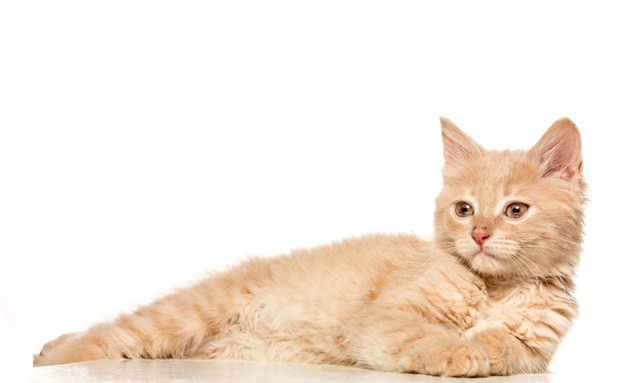

Koceng Oren Lovers
Hallo, Namaku Pupus. Hobi ku berjelajah. Terkadang aku suka membantu manusia yang kesusahan. :).
Blog Home
(current)
Blog Post
Miaw Miaw Miaw Miaw Miaw
Welcome to my miaw miaw.
Your email
Subscribe

Tanda - Tanda Kucing Dalam Keadaan Senang
Published 2 days ago
5 min read
8 comments
Siapa yang punya kucing peliharaan? Apakah kamu penasaran bagaimana cara mengetahui bahwa kucing suka dan senang dengan kita? Kucing punya bahasa tubuh yang berbeda dari manusia. Ada banyak bahasa tubuh dan tanda kucing suka dengan kita, inilah...
Read more →
Mengapa Kucing dan Anjing Tidak Bisa Akur?
Published 3 months ago
3 min read
26 comments
Kucing dan anjing adalah dua binatang yang jarang sekali akur. Mereka lebih sering berkejar-kejaran satu sama lain. Mengapa begitu ya?...
Read more →
Kucing Takut Timun, Mitos atau Fakta?
Published 5 month ago
8 min read
12 comments
Mungkin sebagian dari kita pernah melihat video-video pendek yang beredar di sosial media atau Youtube. Video pendek ini memperlihatkan seorang pemelihara kucing yang menakut-nakuti kucingnya dengan sebuah timun...
Read more →
Designed with
by Dewi Sitha for developers
Choose Colour